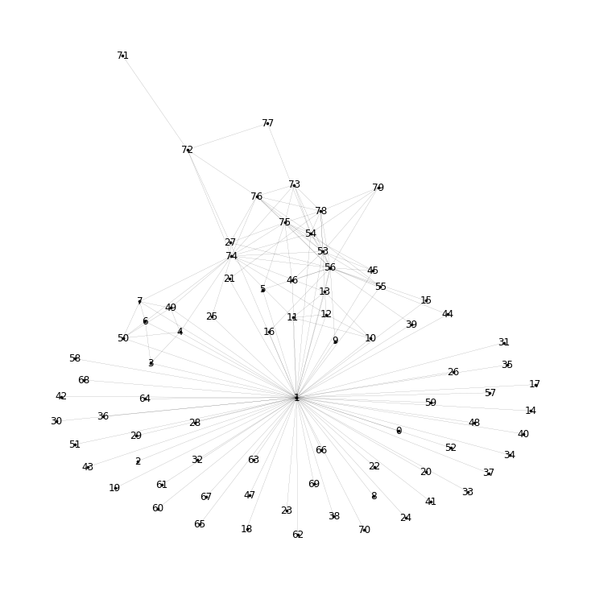
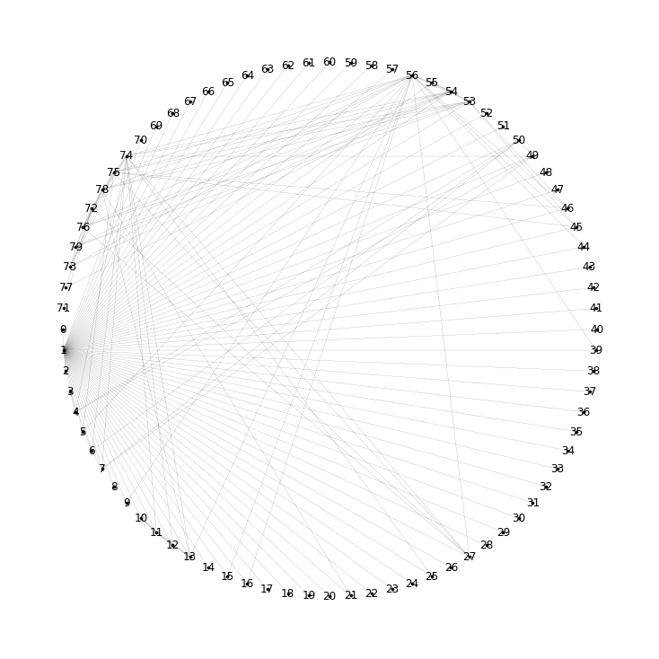
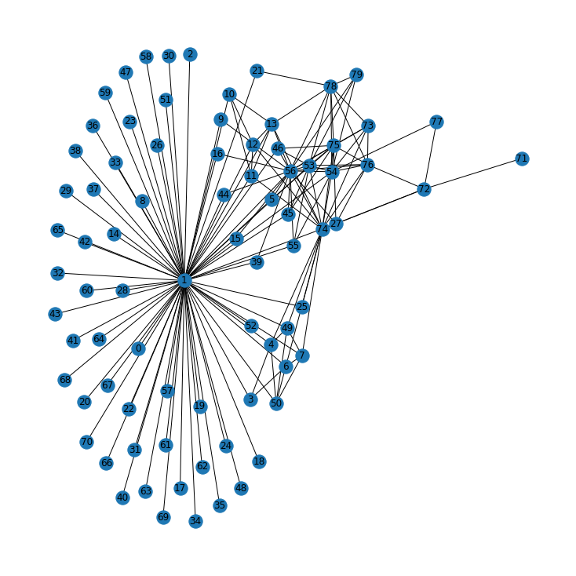
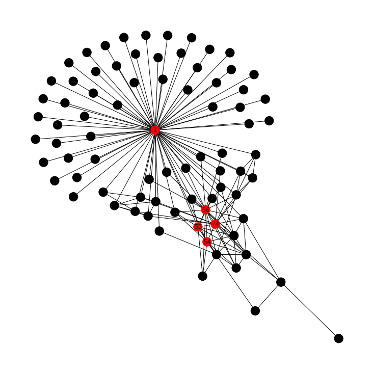
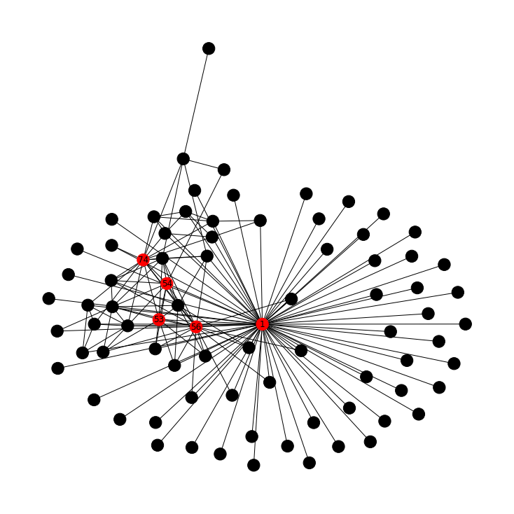
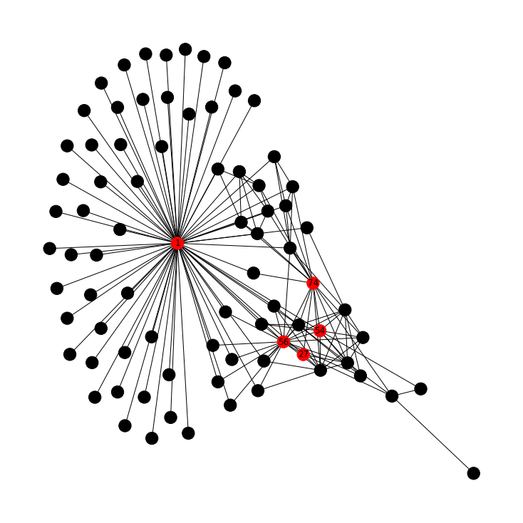
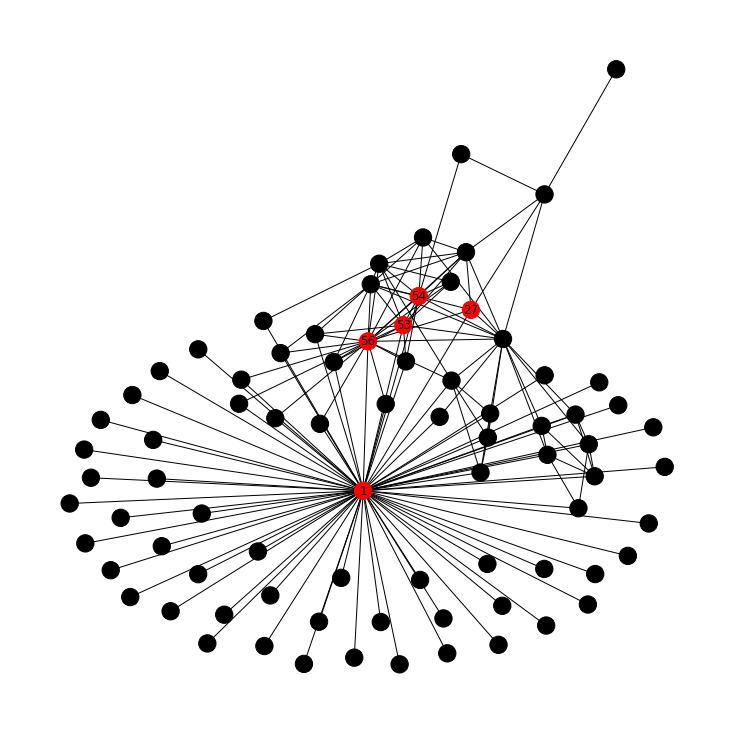

Overview
We studied who emailed whom among Enron's top executives to find the most influential people in the group.
- Enron rose to become one of the largest US firms before a sudden collapse, bankruptcy, and one of the biggest corporate fraud cases ever.
- Goal: build a network from emails sent and received by senior officials to expose connections and the most important actors.
- Subset of 50 senior officials drawn from the public Enron email corpus (cs.cmu.edu/~enron).
- Approach: load emails as a graph, visualize structure, then quantify importance with centrality measures.
- Findings help explain organizational influence and which nodes acted as hubs and bridges.
Methodology
flowchart LR A[Edge List] --> B[Build Graph] B --> C["Centrality (degree / betweenness)"] C --> D[Community Detection] D --> E[Interpret Key Actors]
The Data
The raw data is a simple list of who sent an email to whom, which we turn into a network of people.
- EmailEnron.csv holds 304 directed From-To email edges between senior officials.
- Two columns only: 'From' and 'To', each a numeric node ID representing an official.
- Loaded into an undirected graph of 80 nodes using NetworkX's from_pandas_edgelist.
- Node degrees range from isolated single-link officials up to one node connected to 70 others.
- Minimal schema makes this a pure structural (topology) analysis rather than a content analysis.
Exploratory Analysis
We drew the network several ways to see its overall shape and spot the busiest people at a glance.
- Visualized with three layouts: standard spring draw, shell (circular), and spring_layout.
- Degree inspection shows one dominant node (degree 70) connected to nearly everyone in the group.
- Next-busiest nodes by raw degree: 56 (20), 74 (16), 53 (11), 54 (11), 75 (11).
- Long tail of low-degree nodes (degree 1) indicates peripheral officials with few contacts.
- Circular layout proved clearest for highlighting the hub nodes against the periphery.


Key Actors / Network Structure
A handful of people consistently sit at the center of the network, with one clear hub above the rest.
- Node 1 is the central hub, linked to all others; interpreted as a CEO-level figure.
- Nodes 56 and 54 ranked important across every centrality measure computed.
- Other recurring key actors include 74, 53, 27, and 50 across the measures.
- Visualizations suggest internal team structures, though exact team membership stayed unclear.
- Color-coding the top-5 nodes per measure made the influence hierarchy visible on the graph.


Approach & Results
We ranked people four different ways to confirm who truly mattered in the network.
- Degree centrality top-5: nodes 1, 56, 74, 53, 54 (most direct connections).
- Eigenvector centrality top-5: nodes 1, 56, 74, 53, 54 (connected to other well-connected nodes).
- Betweenness centrality top-5: nodes 1, 56, 54, 27, 74 (bridges on shortest paths between others).
- Closeness centrality top-5: nodes 1, 56, 53, 54, 27 (shortest average distance to all others).
- Node 1 ranked first on all four measures, confirming it as the unambiguous central authority.


Key Takeaways
Network analysis turned a plain email log into a clear map of who held influence at Enron.
- Graph visualization plus centrality measures pinpointed the most important officials objectively.
- Convergence of all four measures on node 1 strongly identifies the top decision-maker.
- Nodes 56 and 54 are consistent secondary power brokers worth deeper investigation.
- Different centralities reveal different roles: hubs (degree) versus connectors (betweenness).
- Built with: pandas, NetworkX, Matplotlib
More Visualizations

Tech Stack
- pandas — data wrangling and tabular manipulation
- matplotlib — plotting
- networkx — graph / network analysis
Attribution
This project was completed as part of the MIT Applied Data Science Program (MIT IDSS / Great Learning). The program provided the case-study scaffolding; the analysis, code, and results are my own. Published with permission, for portfolio use only.